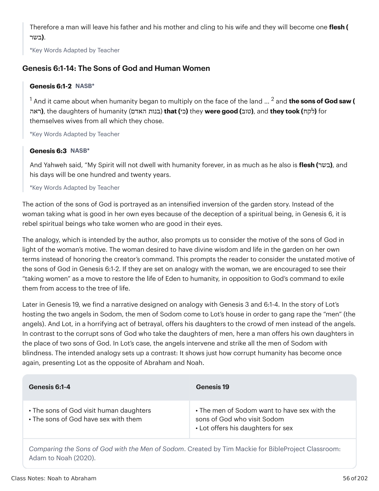
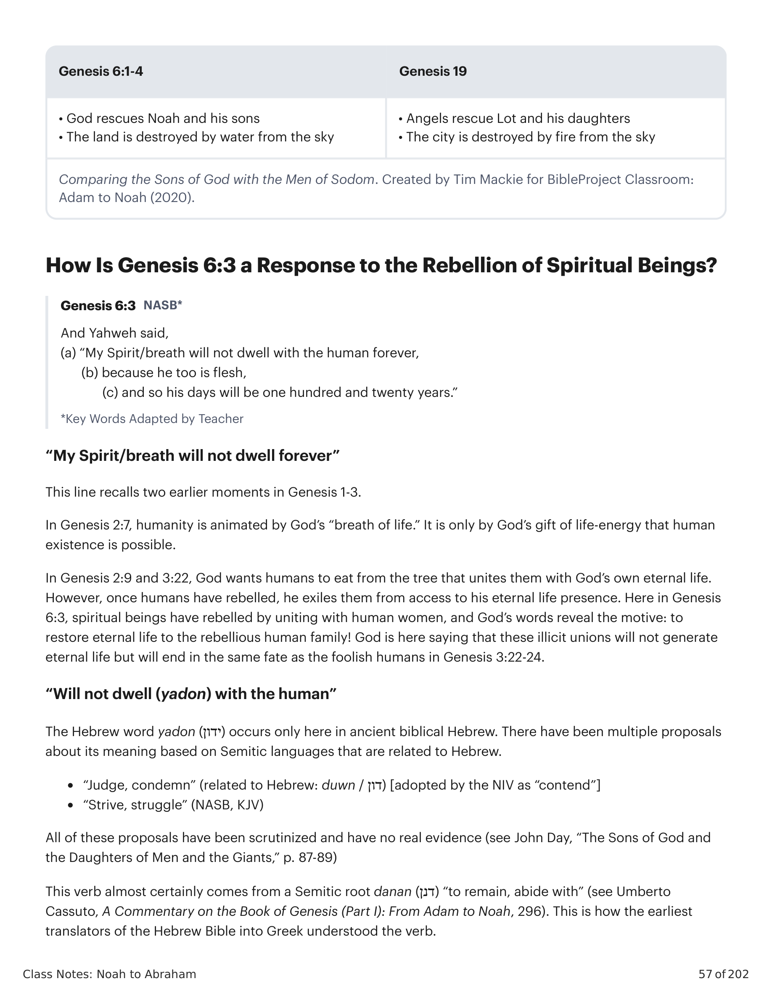

A Bíblia Hebraica retrata um grupo de seres espirituais chamado “o concílio divino” (Sl 82:1, 89:7), também chamado “a hoste do céu” (1 Rs 22:19) ou “santos” (Sl 89:5, 7; Jó 5:1; Zc 14:5; Dn 8:24). Esses membros do concílio divino são os habitantes do reino espiritual. Eles são imagens da glória de Deus no reino celestial e correspondem aos humanos no reino terrenal.The Hebrew Bible depicts a group of spiritual beings called “the divine council” (Ps. 82:1, 89:7), also called “the host of heaven” (1 Kgs. 22:19) or “holy ones” (Ps. 89:5, 7; Job 5:1; Zech. 14:5; Dan. 8:24). These members of the divine council are the inhabitants of the spiritual realm. They are images of God’s glory in the heavenly realm and correspond with humans in the earthly realm.
Em hebraico, a frase plural “filhos de _____” é uma figura de linguagem que significa “membros da classe/grupo de _____.” A palavra em negrito é usada como descritor de uma classe.In Hebrew, the plural phrase “sons of _____” is a figure of speech that means “members of the class/group of _____.” The bold word is used as a descriptor of a class.
Em Gênesis 6:1-2 encontramos:In Genesis 6:1-2 we find:
Gênesis 6:1 traça um forte contraste entre as “filhas da humanidade” e os “filhos de Elohim” porque o ponto em questão é a violação de limites entre humano e divino.Genesis 6:1 draws a strong contrast between the “daughters of humanity” and the “sons of Elohim” because the point at issue is the violation of boundaries between human and divine.
Alguns intérpretes argumentam que os filhos de Elohim em Gênesis 6 são seres humanos.Some interpreters argue that the sons of Elohim in Genesis 6 are human beings.
Essa visão é uma interpretação cristã que remonta ao século IV d.C. Ela argumenta que os filhos de Deus são a linhagem piedosa de Sete, que adora o verdadeiro Deus (Gn 4:26) e é contrastada com a linhagem ímpia de Caim.This view is a Christian interpretation that dates back to the 4th century C.E. It argues that the sons of God are the godly line of Seth, who worship the true God (Gen. 4:26) and are contrasted with the un-godly line of Cain.
Problemas: A Bíblia Hebraica atesta a frase plural “filhos de Elohim” e suas variações mais de oito vezes, e é usada especificamente para se referir ao concílio divino. O texto está mais provavelmente contrastando uma violação de limites entre humanos e elohim. Sete e Caim não são mencionados em Gênesis 6:1-4, nem há referência a proibições de casamento entre duas famílias humanas.Problems: The Hebrew Bible attests the plural phrase “sons of Elohim” and its variations over eight times, and it is used specifically to refer to the divine council. The text is more likely contrasting a boundary violation between humans and elohim. Seth and Cain are not mentioned in Genesis 6:1-4, nor is there any reference to intermarriage prohibitions between two human families.
Essa visão moderna apela para textos onde governantes humanos são postos em analogia com o divino. Por exemplo, quando alguém da linhagem de Davi é adotado como “filho de Elohim” (veja Sl 2:7), ou quando o povo da aliança de Deus, Israel, é chamado de “primogênito” de Yahweh (Êx 4:23). Nessa visão, Gênesis 6:1-4 trata de governantes humanos que abusaram de seu papel divinamente designado e se envolveram em casamentos polígamos.This modern view appeals to texts where human rulers are put on analogy with the divine. For example, when someone from the line of David is adopted as a "son of Elohim" (see Ps. 2:7), or when God's covenant people Israel are called Yahweh's "firstborn son" (Exod. 4:23). In this view, Genesis 6:1-4 is about human rulers who abused their divinely appointed role and engaged in polygamous marriages.
Problemas: Gênesis 6:1-2 não diz em lugar algum que os casamentos eram polígamos. E embora haja paralelos no Antigo Oriente Próximo a reis divinos como filho de um deus, não há paralelo a um grupo ou nação inteira chamado “filho de Deus” como Israel é (Êx 4:23). A frase plural “filhos de Elohim” no hebraico bíblico refere-se exclusivamente a seres espirituais.Problems: Genesis 6:1-2 nowhere says that the marriages were polygamous. And while there are ancient Near Eastern parallels to divine kings as the son of a god, there is no parallel to an entire group or nation that is called “God’s son” like Israel is (Exod. 4:23). The plural phrase “sons of Elohim” in biblical Hebrew refers uniquely to spiritual beings.
120 anos é quanto tempo falta até que o dilúvio venha. Este é o tempo que Noé terá para esse diálogo com Deus enquanto constrói seu refúgio divinamente fornecido. Nephilim traduz-se como “os caídos”, como aqueles que caem em batalha. Os vizinhos antigos de Israel celebravam aqueles que ganharam glória através da conquista em batalha. Os Gibborim e Nephilim eram heróis para os babilônios e cananeus, mas os autores bíblicos veem sua violência como tudo o que há de errado com a família humana.120 years is how long it is until the flood comes. This is how long Noah will be having this dialogue with God as he builds his divinely provided refuge. Nephilim translates to “the fallen ones,” as in those who fall in battle. Ancient Israel’s neighbors celebrated those who won glory through conquest in battle. The Gibborim and Nephilim were heroes to the Babylonians and Canaanites, but the biblical authors see their violence as everything that is wrong with the human family.
Gênesis 6:4 é a história de origem dos gigantes guerreiros que os israelitas devem enfrentar ao entrar e ocupar Canaã. Esses gigantes preenchem o espaço narrativo da semente da serpente no drama em desenvolvimento da Bíblia Hebraica.Genesis 6:4 is the origin story of the warrior giants the Israelites must face as they enter and occupy Canaan. These giants fill the narrative slot of the seed of the snake in the unfolding drama of the Hebrew Bible.
O sentido literal dessa história é bastante claro: Sim, esses seres espirituais cruzaram o limite entre o céu e a terra e tiveram sexo com mulheres.The plain sense meaning of this story is fairly clear: Yes, these spiritual beings crossed the Heaven and Earth boundary and had sex with women.
A frase “e eles tomaram mulheres para si” é uma expressão padrão do hebraico bíblico para relação sexual, incluindo sexo ilícito (veja Gn 38:2; Lv 18:17, 20:17).The phrase “and they took women for themselves” is a standard biblical Hebrew phrase for sexual intercourse, including illicit sex (see Gen. 38:2; Lev. 18:17, 20:17).
Quando seres espirituais são enviados em missões no reino terrenal, são chamados por um título funcional, malakim em hebraico e angelos em grego, ou seja, “anjos”. Na história da Bíblia, anjos regularmente assumem uma aparência humana e interagem com humanos de forma física. Eles podem caminhar com pessoas, ter refeições (veja Gn 18:1-5) e lutar com elas (veja Gn 32:23-32).When spiritual beings are sent on missions in the earthly realm, they are called by a functional title, malakim in Hebrew and angelos in Greek, that is, “angels.” In the story of the Bible, angels regularly take on a human appearance and interact with humans in a physical way. They can walk with people, have meals (see Gen. 18:1-5), and wrestle with them as well (see Gen. 32:23-32).
Esse encontro sexual cósmico entre espécies é reforçado pela presença de um padrão de design narrativo usado pelo autor, que conecta Gênesis 6:1-4 com Gênesis 3:1-7.This cosmic cross-species sexual encounter is reinforced by the presence of a narrative design pattern used by the author, who connects Genesis 6:1-4 with Genesis 3:1-7.
Em Gênesis 3, a mulher viu que a árvore era boa para comer, agradável aos olhos e desejável para adquirir sabedoria; então ela tomou do fruto e comeu. Em Gênesis 6:1-2, os filhos de Elohim viram que as filhas da humanidade eram boas, e eles tomaram para si mulheres de todas as que escolheram.In Genesis 3, the woman saw that the tree was good for eating, pleasant to the eyes, and desirable for gaining wisdom; then she took of the fruit and ate. In Genesis 6:1-2, the sons of Elohim saw that the daughters of humanity were good, and they took for themselves wives from all which they chose.
A ação dos filhos de Elohim é retratada como uma inversão intensificada da história do jardim. Em vez da mulher tomar o que é bom aos seus olhos por meio do engano de um ser espiritual, em Gênesis 6, são seres espirituais rebeldes que tomam mulheres que são boas aos seus olhos.The action of the sons of God is portrayed as an intensified inversion of the garden story. Instead of the woman taking what is good in her own eyes because of the deception of a spiritual being, in Genesis 6, it is rebel spiritual beings who take women who are good in their eyes.
A analogia, que é pretendida pelo autor, também nos prompts a considerar o motivo dos filhos de Elohim à luz do motivo da mulher. A mulher desejou ter sabedoria e vida divinas no jardim por seus próprios termos, em vez de honrar o mandamento do criador. Isso prompta o leitor a considerar o motivo não declarado dos filhos de Elohim em Gênesis 6:1-2. Se eles estão em analogia com a mulher, somos encorajados a ver seu “tomar mulheres” como um movimento para restaurar a vida do Éden à humanidade, em oposição ao mandamento de Deus de exilá-los do acesso à árvore da vida.The analogy, which is intended by the author, also prompts us to consider the motive of the sons of God in light of the woman’s motive. The woman desired to have divine wisdom and life in the garden on her own terms instead of honoring the creator’s command. This prompts the reader to consider the unstated motive of the sons of God in Genesis 6:1-2. If they are set on analogy with the woman, we are encouraged to see their “taking women” as a move to restore the life of Eden to humanity, in opposition to God’s command to exile them from access to the tree of life.
Mais tarde, em Gênesis 19, encontramos uma narrativa desenhada em analogia com Gênesis 3 e 6:1-4. Na história de Ló hospedando os dois anjos em Sodoma, os homens de Sodoma vêm à casa de Ló para estuprar os “homens” (os anjos). E Ló, em um ato horrível de traição, oferece suas filhas à multidão de homens em vez dos anjos.Later in Genesis 19, we find a narrative designed on analogy with Genesis 3 and 6:1-4. In the story of Lot hosting the two angels in Sodom, the men of Sodom come to Lot’s house in order to gang rape the “men” (the angels). And Lot, in a horrifying act of betrayal, offers his daughters to the crowd of men instead of the angels.
Em contraste com os filhos de Elohim corruptos que tomam as filhas dos homens, aqui um homem oferece suas próprias filhas no lugar de dois filhos de Elohim. No caso de Ló, os anjos intervêm e ferem todos os homens de Sodoma com cegueira. A analogia pretendida estabelece um contraste: mostra quão corrupta a humanidade se tornou mais uma vez, apresentando Ló como o oposto de Abraão e Noé.In contrast to the corrupt sons of God who take the daughters of men, here a man offers his own daughters in the place of two sons of God. In Lot’s case, the angels intervene and strike all the men of Sodom with blindness. The intended analogy sets up a contrast: It shows just how corrupt humanity has become once again, presenting Lot as the opposite of Abraham and Noah.


“Meu Espírito/fôlego não habitará com o humano para sempre, porque ele também é carne, e assim seus dias serão de cento e vinte anos.”“My Spirit/breath will not dwell with humanity forever, in as much as he also is flesh, and so his days will be one hundred and twenty years.”
“Meu Espírito/fôlego não habitará para sempre” — esta linha recorda dois momentos anteriores em Gênesis 1-3. Em Gênesis 2:7, a humanidade é animada pelo “fôlego de vida” de Deus. É apenas pelo dom da energia vital de Deus que a existência humana é possível.“My Spirit/breath will not dwell forever” — this line recalls two earlier moments in Genesis 1-3. In Genesis 2:7, humanity is animated by God’s “breath of life.” It is only by God’s gift of life-energy that human existence is possible.“My Spirit/breath will not dwell forever” — this line recalls two earlier moments in Genesis 1-3. In Genesis 2:7, humanity is animated by God’s “breath of life.” It is only by God’s gift of life-energy that human existence is possible.
Em Gênesis 2:9 e 3:22, Deus quer que os humanos comam da árvore que os une com a vida eterna de Deus. No entanto, uma vez que os humanos se rebelaram, ele os exilou do acesso à sua presença de vida eterna. Aqui em Gênesis 6:3, seres espirituais se rebelaram unindo-se com mulheres humanas, e as palavras de Deus revelam o motivo: restaurar a vida eterna à família humana rebelde! Deus está aqui dizendo que essas uniões ilícitas não gerarão vida eterna, mas acabarão no mesmo destino dos humanos tolos em Gênesis 3:22-24.In Genesis 2:9 and 3:22, God wants humans to eat from the tree that unites them with God’s own eternal life. However, once humans have rebelled, he exiles them from access to his eternal life presence. Here in Genesis 6:3, spiritual beings have rebelled by uniting with human women, and God’s words reveal the motive: to restore eternal life to the rebellious human family! God is here saying that these illicit unions will not generate eternal life but will end in the same fate as the foolish humans in Genesis 3:22-24.
“Não habitará (yadon) com o humano” — A palavra hebraica yadon (ידון) ocorre apenas aqui no hebraico bíblico antigo. Houve várias propostas sobre seu significado baseadas em línguas semíticas relacionadas ao hebraico.“Will not dwell (yadon) with the human” — The Hebrew word yadon (ידון) occurs only here in ancient biblical Hebrew. There have been multiple proposals about its meaning based on Semitic languages that are related to Hebrew.
Todas essas propostas foram examinadas e não têm evidência real (veja John Day, “The Sons of God and the Daughters of Men and the Giants,” p. 87-89). Este verbo quase certamente vem de uma raiz semítica danan (דנן) “permanecer, habitar com” (veja Umberto Cassuto, A Commentary on the Book of Genesis (Part I): From Adam to Noah, 296). É assim que os primeiros tradutores da Bíblia Hebraica para o grego entenderam o verbo.All of these proposals have been scrutinized and have no real evidence (see John Day, “The Sons of God and the Daughters of Men and the Giants,” p. 87-89). This verb almost certainly comes from a Semitic root danan (דנן) “to remain, abide with” (see Umberto Cassuto, A Commentary on the Book of Genesis (Part I): From Adam to Noah, 296). This is how the earliest translators of the Hebrew Bible into Greek understood the verb.
Quem ou o que são os filhos de Elohim?Who or what are the sons of Elohim?